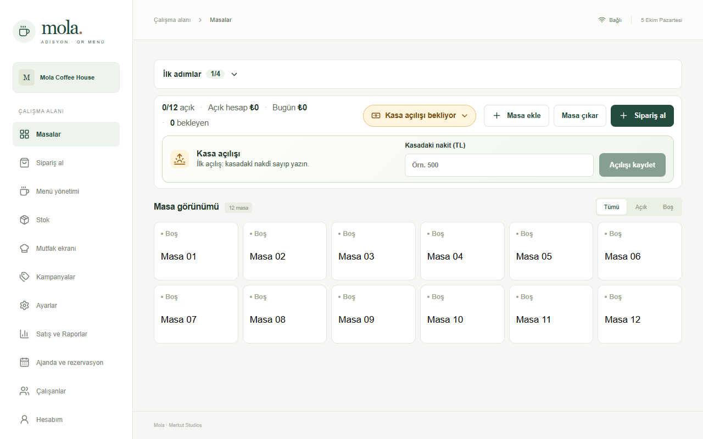
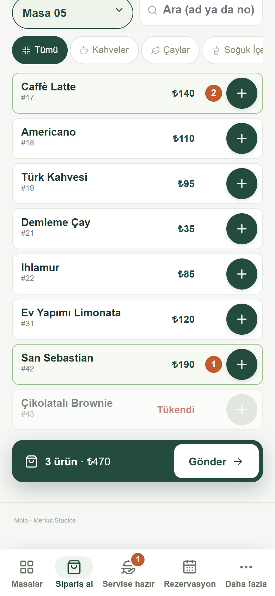
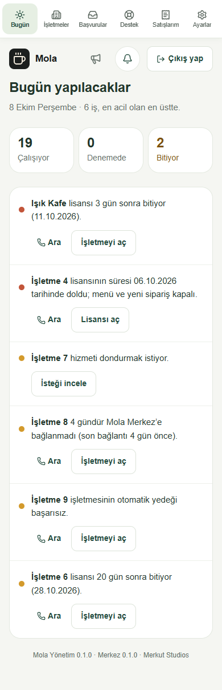
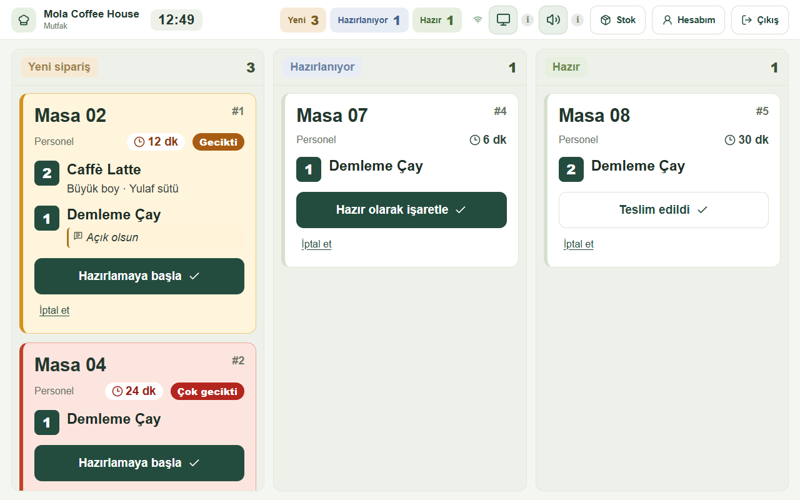

1Mola nedir?
Mola, kafe, restoran, pastane ve çay bahçeleri için yazdığım bir adisyon (masa ve sipariş takibi) ve QR menü sistemidir. Misafir masadaki QR kodu telefonuyla okutur, menüyü görür, sipariş verir, garson çağırır ve hesap ister. Garson, kasiyer, mutfak, müdür ve işletme sahibi aynı sistemi tablet, telefon ya da kasa bilgisayarından kullanır.
Çözmeye çalıştığı sorunlar
- İnternet kesilince iş durmamalı. Bu yüzden sistem bulutta değil, işletmenin kendi kasa bilgisayarında çalışır. Tabletler ona kafenin Wi-Fi'si üzerinden bağlanır.
- İşletmenin verisi işletmede kalmalı. Satışlar, misafir ve çalışan bilgileri yalnız işletmenin bilgisayarında, şifreli olarak durur. Bunun hem güvenlik hem de kişisel verilerin korunması (KVKK) açısından anlamı var.
- Yine de uzaktan hizmet verilebilmeli. Lisans, destek, güncelleme, sahibin telefonundan raporlar ve misafirin mobil veriyle menü açabilmesi için satıcı tarafında bir sunucu (Mola Merkez) var. Bu sunucu satış verisini görmeyecek şekilde tasarlandı.
- Ucuz bir kafe bilgisayarında 5 yıl hızlı çalışmalı. Bunun için ayrı bir yük testi yapıldı (bölüm 21).
Rakamlarla proje
| Alan | Klasör | Dosya | Satır |
|---|---|---|---|
| Kafe sunucusu | server/ | 109 | 17.286 |
| Mola Merkez sunucusu | server/merkez/ | 31 | 6.878 |
| Ortak iş kuralları | packages/domain/ | 64 | 6.599 |
| Ekranlar (React, TypeScript) | src/ | 215 | 17.458 |
| Stiller (CSS) | src/ | 67 | 5.563 |
| Testler | tests/ | 274 | 35.822 |
| Betikler, kurulum programı (C#) | scripts/ | 55 | 9.193 |
| Android kabuğu (Java) | mobile/android/ | 6 | 1.943 |
Satırlar 7 Ekim 2026'da sayıldı (boş satırlar dahil, node_modules ve arşiv hariç). Test kodu ürün kodundan fazladır; bu bilinçli bir tercihtir (bölüm 21).
Kimler kullanır
| Kullanıcı | Cihaz | Yaptıkları |
|---|---|---|
| Misafir | Kendi telefonu (tarayıcı) | Menü, sepet, sipariş, garson çağırma, hesap isteme. Hesap açmaz. |
| Garson | Telefon (tarayıcı ya da Android uygulaması) | Sipariş alır, QR siparişini onaylar, servis eder, masayı temizler. |
| Mutfak | Tablet ya da fiş yazıcısı | Siparişi görür, "Hazırlanıyor" ve "Hazır" der; stok sayımı. |
| Kasiyer | Kasa bilgisayarı ya da tablet | Ödeme, iade (sınırlı), gün sonu kasa sayımı. |
| Müdür ve sahip | Kasa bilgisayarı, tablet, kendi telefonu | Menü, raporlar, stok, rezervasyon, ayarlar; sahip ayrıca uzaktan rapor ve uzaktan yönetim. |
| Satıcı (ben) | Mola Yönetim paneli | Lisans, paket, destek, güncelleme yayını, duyurular. |
2Büyük resim: mimari
Sistem iki sunucu ve onlara bağlanan tarayıcılardan oluşur. İki sunucu da aynı kod deposundan, aynı dilde (TypeScript) yazıldı; farklı giriş noktalarıyla başlarlar (server/index.ts ve server/merkez/index.ts).
Parçalar
| Parça | Görevi | Kod |
|---|---|---|
| Kafe sunucusu | Bütün iş kuralları, veri, yazdırma, yedek. Tabletlere ekranları ve API'yi sunar. | server/app.ts, server/runtime.ts |
| Ekranlar | Tek sayfalı React uygulaması; rol ve ekran genişliğine göre düzen değiştirir (360 px telefondan 1280 px kasaya). | src/, giriş index.html |
| Misafir sayfası | Yalnız misafir menüsünü içeren ayrı, küçük paket (~150 kB sıkıştırılmış). | menu.html → src/guest-main.tsx |
| Mola Merkez | Lisans, destek, güncelleme, tünel, köprü, şifreli yedek, web formu. | server/merkez/ |
| Mola Yönetim | Satıcının paneli (React). | merkez.html, src/Platform*.tsx |
| Raporlarım | Sahibin telefonundaki rapor ve uzaktan yönetim sayfası. | raporlarim.html, src/ReportsPhone.tsx, src/RemoteAdmin.tsx |
| Masaüstü başlatıcıları | Kurulum, başlatma, kaldırma, güvenlik duvarı kuralı (Windows); Mac ve Linux için kabuk betikleri. | scripts/desktop/*.cs, *.sh |
| Android uygulaması | Tam ekran WebView; kafe bilgisayarını ağda bulur, ekranı açık tutar, kütüphanesiz QR okur. | mobile/android/ |
| Web sitesi | Statik tanıtım sitesi; derleme sırasında üretilir. | site/, scripts/site-build.ts |
3Diller, kütüphaneler ve araçlar
Bir kural koydum: mümkün olduğunca az dış bağımlılık. Üretimde kullanılan npm paketleri yalnız yedi tanedir (Express, React, React DOM, lucide-react simgeleri, qrcode, sharp, zod). Veritabanı, WebSocket, SMTP e-posta, Excel (.xlsx) üretimi ve QR çözme gibi işler kütüphanesiz, Node.js'in kendi modülleriyle yazıldı.
| Dil / araç | Nerede ve ne için | Dosya / klasör |
|---|---|---|
| Diller | ||
| TypeScript 7.0 | Bütün sunucu, ekran ve iş kuralı kodu. Tip denetimi npm run typecheck. | server/, src/, packages/domain/ |
| HTML | Dört uygulama girişi (personel, misafir, Mola Yönetim, Raporlarım) ve web sitesi sayfaları; bu belgenin kendisi de HTML'den basıldı. | index.html, menu.html, merkez.html, raporlarim.html, site/src/pages/ |
| CSS | Çatı (framework) yok; 67 elle yazılmış stil dosyası. Duyarlı düzen, telefonda alt menü, yazdırma stilleri (@page). | src/*.css, site/src/assets/site.css |
| SQL (SQLite) | Tablolar, dizinler, tetikleyiciler (değiştirilemez işlem kaydı), yıl paketlerinde ATTACH + INSERT…SELECT. | server/store.ts, server/history.ts, server/merkez/journal.ts |
| C# 5 (.NET Framework 4) | Windows kurulum programı, Mola.exe başlatıcısı ve kaldırıcı. Ayrı bir derleyici kurmamak için Windows'un içindeki csc.exe ile derlenir. | scripts/desktop/Kurulum.cs, Mola.cs, Kaldir.cs, Ortak.cs, Urun.cs |
| Java | Android kabuğu (6 dosya): WebView, ağda kafe arama, dosya indirme, kütüphanesiz QR çözücü (Reed-Solomon dahil). | mobile/android/src/com/merkutstudios/mola/ |
| PowerShell | Windows anahtar kilidi (DPAPI) ve USB yazıcıya gönderim sunucudan powershell.exe ile; yerel HTTPS sertifikası betiği. | server/os-lock.ts, scripts/local-https-cert.ps1 |
| Batch (.cmd) | Kurulum paketinde üretilen sunucu başlatma ve durdurma dosyaları; işletmenin kendi ayar dosyası ayarlar.cmd. | scripts/build-installer.mjs |
| Kabuk (sh) | Mac ve Linux başlatıcıları, Linux kurulum/kaldırma, VDS için kur.sh. | scripts/desktop/*.sh, scripts/merkez-linux-paket.mjs |
| Çalışma ortamı ve kütüphaneler | ||
| Node.js 24 | İki sunucunun çalışma ortamı. Kurulum paketine kendi node.exe'si konur; kafede Node kurmak gerekmez. | package.json engines |
| Express 5.2 | HTTP yönlendirme ve ara katmanlar. | server/app.ts, server/merkez/app.ts |
| node:sqlite | Node'un yerleşik SQLite modülü (DatabaseSync). Ayrı veritabanı sunucusu yok; tek dosya. | server/store.ts |
| node:crypto, WebCrypto | AES-256-GCM, Ed25519, X25519, HKDF, HMAC, scrypt, SHA-256. Tarayıcı tarafında aynı kod WebCrypto ile çalışır. | server/sealing.ts, packages/domain/remote-crypto.ts |
| WebSocket (RFC 6455) | Misafir tüneli için; çerçeveleme, maskeleme, ping/pong elle yazıldı. | server/ws-frames.ts |
| React 19 | Bütün ekranlar. | src/*.tsx |
| zod 4 | Kafe ile Merkez arasındaki mesajların katı şema denetimi (fazla alan reddedilir). | server/sync-protocol.ts |
| sharp | Ürün fotoğraflarını küçültme, destek eklerinden konum bilgisini silme. | server/merkez/attachments.ts |
| qrcode | Masa QR kodları, A6 masa standı, sosyal medya kartları. | src/SettingsQr.tsx, src/tableStand.ts |
| Derleme, test ve yayın | ||
| Vite 8 | Ekranları derler; dört giriş noktası; misafir sayfası için göreli dosya adresleri. | vite.config.ts |
| esbuild | Sunucuyu kurulum paketi için tek dosyaya paketler; derleme anında Merkez'in açık anahtarını gömer, test şifrelerini çıkarır. | scripts/build-installer.mjs |
| tsx + node:test | Birim testleri (Node'un kendi test koşucusu). | tests/*.test.ts |
| Playwright 1.63 | Gerçek Chrome'da tarayıcı testleri; site videolarının kaydı; bu belgenin PDF'e basılması. | tests/browser/, scripts/pdf-belgeler.mjs |
| Android SDK araçları | Gradle olmadan: aapt2, javac, d8, zipalign, apksigner. Çıktı yaklaşık 100 kB. | scripts/build-apk.mjs |
| Sunucu ortamı (hazırlandı, henüz kurulmadı) | ||
| Ubuntu LTS, systemd, ufw | VDS işletim sistemi, Merkez servisi (çökünce 5 sn'de yeniden başlar), güvenlik duvarı (yalnız 22, 80, 443). | docs/VDS_KURULUM.md |
| Caddy | HTTPS sertifikasını otomatik alır ve yeniler, istekleri Merkez'e iletir, siteyi sunar, WebSocket taşır. | Caddyfile.ornek |
Neden C# ve Java? Windows'ta bir masaüstü penceresi ve kurulum programı için tarayıcı dışında bir şey gerekiyordu; Windows'ta zaten bulunan C# derleyicisi ek kurulum istemedi. Android'de de ekranların kendisi web olduğu için yalnız ince bir Java kabuğu yetti.
4Katmanlar ve kod düzeni
packages/domain hiçbir şey içe aktarmaz (ne Node modülü ne Express); bu yüzden tarayıcıda ve sunucuda aynen çalışır. Bir test (tests/browser-imports.test.ts) ekranların sunucuya ait bir modülü yanlışlıkla içeri almadığını denetler.- Sunucuya asla güvenmeyen ekran, ekrana asla güvenmeyen sunucu. Örneğin misafirin sepetindeki fiyat sunucuda yeniden hesaplanır (
quote); fark varsa siparişPRICE_CHANGEDile geri döner. Her işlem rol listesiyle sunucuda ayrıca denetlenir; izinsiz istek 403 alır. - Tekrar gönderime dayanıklı yazma. Her yazma isteği bir
requestIdtaşır. Ağ koptu diye aynı istek iki kez gelirse ikincisi aynı sonucu döndürür, çift sipariş ya da çift ödeme oluşmaz. 5 yıllık testte sunucu yoğun anda iki kez zorla kapatıldı: onaylanan hiçbir kayıt kaybolmadı ya da ikilenmedi. - Ekranlar sorarak güncellenir. Personel ve misafir ekranları 2 saniyede bir sunucuya sorar (
poll); sunucu ekrandaki sürümün etiketini (ETag) karşılaştırır, değişiklik yoksa gövdesiz 204 döner. Arka plandaki sekme sormaz. Sunucunun gönderdiği anlık durum rol başına kırpılır: derbi günü örneğinde garsona giden veri 196 kB'tan 114 kB'a, mutfağa giden 179 kB'tan 48 kB'a indi.
5Bir siparişin yolculuğu
- Durumlar:
awaiting_approval→new→preparing→ready→served(ya dacancelled). Kurallar tek dosyada:packages/domain/engine.ts. - Değiştirme süresi: misafir siparişini süre dolana kadar değiştirebilir ya da iptal edebilir. Fiş yazıcısı ancak süre dolunca basar; böylece boşa fiş çıkmaz.
- Mutfak "Fiş" modu: mutfak ekran yerine yazıcı kullanıyorsa sipariş basılınca "Hazırlanıyor" olur. Yazıcı hatası (kâğıt bitti, kapalı, ağdan ulaşılamıyor) ESC/POS durum sorgusu ve ağ hata kodlarından ayırt edilip kasada kalıcı uyarı olarak gösterilir.
- "Geri al": mutfak yanlış bir düğmeye bastıysa 5 saniye içinde geri alabilir; sunucu yalnız son adımı, aynı sürümde ve süre içinde kabul eder.
- Hesap fişi yasal fiş değildir; yazar kasaya giriş için ödeme penceresinde KDV oranlarına bölünmüş bir "yazar kasa yardımcısı" kartı çıkar.
6İş günü 05:00'te döner
Gece 01:30'da kapanan bir hesap "dün"ün değil "bu gecenin" satışıdır. Bu yüzden takvim günü yerine tek bir sabitle tanımlanan bir iş günü kullanılır: DAY_START_HOUR = 5 (packages/domain/business-day.ts). Kasa günü, bütün raporlar, stok günü, rezervasyon günü, e-posta dönem raporları ve personel oturumlarının bitişi bu sabitten türer. Sabit değişirse hepsi birlikte kayar. Testler 23:00–02:00 gecesini, 04:59 ve 05:00'i, 29 Şubat 2028'i ve farklı saat dilimlerini ayrıca dener; tarayıcı test koşucusu 05:00'e 4 dakikadan az kala yeni test başlatmaz, çünkü o anda oturumlar gerçekten kapanır.
7Veri saklama: mühürlü satırlar
Veritabanı tek bir SQLite dosyasıdır (merchant.sqlite). Tabloların yalnız sorgu için gereken birkaç sütunu (tür, kimlik, gün, zaman) açıktır; asıl içerik her satırda şifreli bir "mühür" olarak durur.
server/sealing.ts, server/store.ts, server/key-vault.ts).- AES-256-GCM hem gizlilik hem bütünlük sağlar: bir bayt değişirse satır açılmaz. AAD'ye satırın kapsamını yazmak, şifreli bir satırı başka bir kaydın yerine kopyalama saldırısını engeller.
- Sıkıştırma şifrelemeden önce yapılır (deflate-raw, sabit bir sözlükle; kapanan hesaplar yaklaşık 3,6 kat küçülür). Şifreli veri sıkışmadığı için sıra önemlidir (
server/packing.ts). - Anlık durum küçük tutulur: açık masalar, menü ve ayarlar işletme başına tek bir satırda (yaklaşık 20 kB) durur ve her işlemde yeniden yazılır. Kapanan hesaplar 6 saat sonra
history_*tablolarına taşınır. - Kurtarma kodu yalnız kasa bilgisayarının ekranında bir kez gösterilir; kaydedildiği, koddan rastgele iki parça sorularak doğrulanır. Kod hiçbir yerde saklanmaz; satıcı da bilmez. Windows şifresi unutulursa program "Veriler kilitli" açılır ve kâğıttaki kodla açılır.
8Gün, ay ve yıl özetleri
5 yıllık bir kafede 1,6 milyon sipariş vardır. "Tümü" raporu her seferinde bunları tek tek açarsa yavaşlar. Çözüm, değişmeyen geçmişi özetleyip saklamak ve yalnız değişen parçayı yeniden hesaplamaktır.
History.reportSpan).- Geçersiz kılma: geçmiş bir günü değiştiren her işlem (geç kapanan hesap, eski hesaba iade, yöntem düzeltmesi, geriye tarihli gider, kasa düzeltmesi, vardiya düzeltmesi) o ayın ve yılın özetini siler; sonraki rapor onu parça parça yeniden kurar. Doğruluk testi: iki 5 yıllık kafede "Tümü", her yıl ve 12 rastgele dönem için özetten okunan her rakam gün gün toplanan rakamla kuruşu kuruşuna aynı çıktı.
- Parça parça çalışma: Node.js tek iş parçacıklıdır; uzun bir hesap bütün tabletleri bekletir. Bu yüzden özetler 12–15 ms'lik dilimlerle kurulur (
drainSlowly), arada tabletlerin istekleri yanıtlanır. Program başlatmak gibi işletim sistemini bekleten işler ayrı iş parçacığına taşındı (server/programs.ts). - KDV satıldığı orandan: her sipariş satırı satıldığı andaki KDV oranını taşır; aylık ve yıllık özetler oranları dondurur. Bir ürünün oranı bugün değişse de geçmişin KDV dökümü değişmez.
- Sonuç (5 yıllık orta kafe): "Tümü" özeti 1,2 sn → 0,03 sn; Excel "Tümü" 3,2 sn → 0,2 sn; raporlar sırasında bir tabletin en uzun beklemesi 3,2 sn → 0,28 sn; bellek 919 → 371 MB.
9Yıl paketleri ve kişisel verinin silinmesi
Her takvim yılı, bir sonraki yılın 1 Şubat'ından sonra kafe boşken kendi dosyasına (yil-2025.sqlite) taşınır ve bir daha açılmaz. Günlük çalışılan dosya yalnız açık yılı tutar; böylece yedekler küçülür (yoğun kafede 5. yılda yedek başına 1,72 GB → 0,27 GB).
Adımlar (her biri işaretli; elektrik kesilirse kaldığı yerden sürer)
- Hazırlık: doğrulanmış yedek; ilk pakette veri klasörünün kopyası (90 gün sonra kendiliğinden silinir).
- Kapatma: o yıla yazma kapanır; yılın günlük, aylık, yıllık özetleri kurulur; her malzemenin 1 Ocak 05:00'teki stoğu yeni yıla açılış sayımı olarak yazılır.
- Kopyalama: ayrı bir iş parçacığı satırları tek bir okuma anında geçici dosyaya kopyalar (
ATTACH+INSERT…SELECT). - Kişisel bilgilerin silinmesi: kopyada rezervasyon adı "Müşteri" olur, telefon ve not, satır notları, platform müşteri adı silinir; misafirin tarayıcı kimliği tek yönlü bir etikete çevrilir (raporlardaki "farklı misafir sayısı" aynı kalsın diye). Değişen satır aynı kapsamla yeniden mühürlenir ve okunarak denetlenir (
server/package-privacy.ts). - Doğrulama: ikinci bir iş parçacığı her tablonun satırlarını canlıdakiyle yan yana karşılaştırır: ya bayt bayt aynı, ya da değiştirilmiş satırın SHA-256'sı kaydedilen değerle aynı olmalı. Dosyanın SHA-256'sı kaydedilir.
- Mühürleme ve silme: paket tek işlemde kaydedilir; canlı dosyadan yalnız paketteki kopyasıyla eşleşen satırlar küçük partilerle silinir.
Test: 10 farklı kesme noktası denendi. 5 yıllık deneme kafesinde paketlemeden önce ve sonra bütün rakamların SHA-256 özeti aynı; paketlerdeki 554.319 satırda silinmesi gereken kişisel bilgi 0. Haftada bir her paketin SHA-256'sı, ayda bir satırları denetlenir; bozuk paket yedekten kendiliğinden geri gelir.
10Yedekleme algoritması
server/backup-scheduler.ts, server/backup-retention.ts, server/change-marker.ts, server/cloud-backup.ts, server/merkez/backup-vault.ts).- Değişiklik işareti: veritabanında tek bir sayaç satırı. Her başarılı yazma isteği sayaçı ilerletir (giriş, okundu işaretleri, yazdırma ve arka plan işleri sayılmaz). Yedek, veritabanını okumadan hemen önce sayacı "silahlar"; sayacı tutan doğrulanmış bir yedek varsa gece yedeği gereksizdir. Bir test, uygulamadaki her yazma yolunun iki listeden birinde (değişiklik / değişiklik değil) olduğunu denetler; listede olmayan yeni bir yol testi bozar.
- Saklama algoritması: önce iş günü başına en yeni yedek seçilir; sonra yedeği olan son 7 iş günü, bitmiş son 4 ISO haftasının ve son 12 ayın en yenisi tutulur. "Yedeği olan son günler" kuralı, haftalarca kapalı kalan bir bilgisayarda eski yedeklerin toptan silinmesini önler.
- Merkez'de yer hesabı: sabit kota yerine işletmenin kendi boyutundan: (kopya sayısı + 1) × en büyük kopya + her yıl paketi bir kez. Eski sabit 2 GB kuralı yoğun bir kafede yaklaşık 2,8. yılda yüklemeyi tamamen durdururdu; 5 yıllık test bunu ortaya çıkardı.
11Lisans, kalp atışı ve paketler
server/kafe-link.ts, server/install-auth.ts, server/license.ts).- İmza türleri ayrı: aynı Ed25519 anahtarı lisans, nabız (
mola-nabiz-1), iletişim bilgisi, güncelleme, adres değişikliği, kapanış ve işlem kaydı mühürü için kullanılır; her birinin mesajı farklı bir amaç etiketiyle başlar. Böylece bir türün imzası başka bir tür yerine kullanılamaz. - 14 gün çevrimdışı: son imzalı nabızdan sonra 7. günde uyarı, 14. günde misafir menüsü ve yeni sipariş kapanır; bağlantı gelince açılır.
- Bir lisans, bir bilgisayar: kalp atışı bilgisayar kimliğinin (Windows MachineGuid) kurulum sırrıyla HMAC'ını taşır. Başka bilgisayardan bağlanılınca yeni bilgisayar etkin olur, eskisi imzalı "başka bilgisayar" yanıtı alır.
- Paketler (özellik kapıları): lisans
featureslistesini taşır (14 hizmet kimliği,packages/domain/features.ts). Sunucu bütün personel ve misafir yollarından önce bir bekçi çalıştırır: kapalı hizmetin yolu403 FEATURE_NOT_IN_PACKAGEdöner (server/feature-guard.ts). Ekran kapalı yeri soluk ve bulanık gösterir. Hiçbir veri silinmez; hizmet geri gelince kaldığı yerden döner. - Geriye uyumluluk: eski kafe sürümleri bilmedikleri bir alanı olan lisansı reddeder. Bu yüzden Merkez her lisansı aynı sıra numarasıyla iki kez imzalar (özellik listeli ve listesiz); yeni kafe birincisini, eski kafe ikincisini alır. Kafe ve Merkez her yeni yetenek için birbirine
acceptslistesiyle haber verir; karşı taraf bilmiyorsa alan gönderilmez.
12Uzaktan raporlar: uçtan uca şifreleme
İşletme sahibi raporlarına telefonundan bakmak istiyor; ama raporlar Merkez'den geçerken Merkez'in onları okumaması gerekiyor. Çözüm, kafe bilgisayarı ile telefon arasında uçtan uca şifrelemedir (packages/domain/remote-crypto.ts; aynı kod sunucuda Node 24'ün, telefonda tarayıcının WebCrypto'suyla çalışır).
- Yeniden oynatma koruması: canlı yanıt, sorunun nonce'unu taşır; eski bir yanıt yeni bir soruya verilemez. Telefon daha eski tarihli bir rapora geri dönmez.
- Test:
tests/remote-reports.test.tsMerkez'in aldığı ve gönderdiği her baytı ve iki veritabanındaki her satırı ürün adı, tutar ve rapor alan adları için tarar; hiçbiri bulunmamalı.
13Uzaktan yönetim ve iki adımlı doğrulama
Sahip, eşleştirdiği cihazdan kafenin bütün ekranlarını uzaktan açabilir. Bu, raporlardan daha tehlikeli bir yetki olduğu için kurallar daha sıkıdır (server/remote-admin.ts, packages/domain/remote-admin-crypto.ts):
- Giriş: cihaz yeni bir geçici X25519 anahtarı Ed üretir. k1 = HKDF(DH(Ed, C) ‖ DH(P, C)); C kafenin sabit anahtarı, P cihazın dışa aktarılamaz anahtarı. Şifre ve telefondaki 6 haneli kod (TOTP) k1 altında AES-256-GCM ile gönderilir. k1'i yalnız bu cihaz ve bu kafe hesaplayabilir; Merkez için doğru ve yanlış şifre aynı görünür.
- Oturum anahtarı: kafe kendi geçici anahtarı Ec'yi verir; K = HKDF(DH(Ec, Ed) ‖ k1). Geçici anahtarlar atıldığı için ileriye dönük gizlilik sağlanır: kalıcı anahtarlar sonradan çalınsa bile eski oturumlar açılamaz.
- Her istek: K ile AES-GCM; ek veri oturum, sekme, sıra numarası ve zamandır. Kafe sekme başına görülen sıra numaralarını tutar; aynı numara ya da 512 geride kalan numara reddedilir. Büyük yanıtlar (Excel, PDF) 4 MB'lık şifreli parçalarla gelir.
- Oturum gerçek bir personel oturumudur: aynı 05:00 sonu, aynı 10 dakikalık otomatik kilit. Jeton kafeden hiç çıkmaz; çözülen istek kafenin içinde, yalnız bu sürecin rastgele sırrını taşıyan bir işaretle yeniden oynatılır.
- Uzaktan yapılamayanlar: yedekten geri yükleme, kurtarma kodu, cihaz eşleştirme, uzaktan erişim izinlerini açmak, güncelleme kurmak (403
REMOTE_FORBIDDEN).
TOTP ve "adım onayı"
Doğrulama kodları RFC 6238 TOTP'dir: HMAC-SHA1, 30 saniyelik adım, 6 hane, ±1 adım tolerans ve aynı adımın ikinci kez kullanılmasının reddi (server/totp.ts). Mola Yönetim'de fiyat, paket, ödeme, duyuru ve güncelleme yayını gibi işlemler oturum açık olsa bile ayrıca güncel bir kod ister; doğru kod o oturuma 10 dakikalık bir "yetki penceresi" açar (server/merkez/step-up.ts). Yanlış denemeler adres başına iki katına çıkan bekleme süresiyle sınırlanır.
14Uzaktan destek köprüsü
Kafe modemin arkasında olduğu için Merkez kafeye bağlanamaz. Kafe, yalnız gerektiğinde (uzaktan destek izni açık, eşleşmiş bir telefon var ya da eşleştirme QR'ı ekranda) Merkez'e tek bir uzun bekleyen istek (long-poll, en çok 25 sn) açık tutar; Merkez beklettiği istekleri bu cevaba koyar, kafe sonuçları ayrı imzalı bir istekle geri yollar (server/relay.ts, server/merkez/relay.ts). "Mola destek" rolü sunucuda bir izin listesiyle sınırlanır: menü, masa, yazıcı gibi ekranlar açık; satış, ödeme, kasa, çalışan şifreleri, misafir telefonları kapalıdır (403). Oturum açıkken bütün personel ekranlarında "Mola ekibi bağlı" bandı görünür ve her değişiklik sahibin kaydına düz Türkçe yazılır.
15İnternetten menü: misafir tüneli
Misafir masadaki QR'ı kendi mobil verisiyle açabilmeli. Ama kafe bilgisayarı internete açık değil ve açılmamalı. Çözüm: kafe, Merkez'e dışa doğru tek bir WebSocket bağlantısı açık tutar; Merkez misafirin isteklerini bu bağlantının içinden kafeye taşır.
server/guest-tunnel.ts, server/merkez/guest-tunnel.ts, server/tunnel-protocol.ts, server/ws-frames.ts).Tasarım kararları
- Neden WebSocket, neden kendi yazdığım? Kalıcı, çift yönlü ve çoklanmış tek bir bağlantı; uzun bekleyen istek (köprü) 30 misafirde sıraya girerdi. Yalnız ikili mesajlar, ping/pong ve kapanış gerektiği için RFC 6455'in bu kısmı 200 satırın altında yazıldı.
- Mesaj biçimi: her mesaj
[4 bayt başlık uzunluğu][başlık JSON][gövde]. Türler:hello,req,res,data,cancel. Kafe büyük bir fotoğrafın parçalarını istekler arasında sırayla gönderir; büyük yanıt küçükleri bekletmez. - İmza: bağlantı anahtarı = HMAC(kurulum anahtarı, bu bağlantının nonce'u); her istek bu anahtarla imzalanır (kimlik, yöntem, yol, misafir adresi, işletme, gövde özeti). Kafe misafirin IP adresine yalnız bu imzayla inanır; böylece hız sınırları Merkez'in tek adresine değil her misafire ayrı çalışır.
- İki uçta izin listesi: yalnız misafir sayfası, onun dosyaları,
/api/guest/*ve ürün fotoğrafları. Personel yolları, giriş, masaüstü araçları Merkez'de 404'tür ve kafeye hiç gitmez; kafe aynı listeyi kendi koduyla bir kez daha denetler. - Adalet: kafe başına aynı anda en çok 48 istek, fazlası o kafenin kendi sırasında (300) bekler; yanıt vermeyen bir kafe diğerlerini etkilemez. 20 saniyede yanıt gelmezse misafire "Menü şu anda açılamıyor" sayfası.
- İçerikle adreslenen önbellek: misafir sayfası ve dosyaları SHA-256'larıyla tanınır; Merkez bunları bir kez alır, bütün kafeler için ortak tutar, tarayıcıya "immutable" önbellek başlığıyla verir. Kafenin yüklemesi çoğunlukla yalnız küçük JSON'lardır.
- Web tasarımı tarafı: misafir sayfası ayrı bir Vite girişidir (
menu.html): personel ekranları, giriş ve şerit içinde yoktur (~505 kB ham, ~150 kB sıkıştırılmış). Sayfa/q/<kod>/alt yolunda çalıştığı için betik ve stil adresleri göreli üretilir (vite.config.tsrenderBuiltUrl), API adreslerine önek eklenir (src/basePath.ts). Çerezin yolu da Merkez'de/q/<kod>/'a daraltılır; aynı sitedeki iki kafe çerez paylaşmaz.
Kafe kapalıyken: menünün kopyası (8 Ekim)
Kafe bilgisayarı kapalıyken QR'ı okutan misafir eskiden yalnız "Menü şu anda açılamıyor" görürdü. Artık Merkez menünün herkese açık bir kopyasını tutar ve onu gösterir; sipariş verilemez (server/menu-mirror.ts, server/merkez/menu-mirror.ts, packages/domain/menu-mirror.ts).
- Ne gider: misafirin göreceği her şey ve fazlası değil: işletme adı, logo, tema, kategoriler, ürünler, seçenekler, "tükendi", kampanyalar (zaman pencereleri ve kota için satılan adet), masa adları. Masa kodunun kendisi değil, yalnız tek yönlü özeti (
SHA-256("mola-masa:v1:" + kod), 160 bit) gider; Merkez kopyayı gösterirken adresteki kodu özetleyip listede arar. Satış, sipariş, misafir, çalışan bilgisi kopyada yoktur. - Ne zaman: veritabanına her yazmadan sonra (3 sn birleştirerek), tünel her yeniden bağlandığında ve 10 dakikada bir. Kopya değişmediyse Merkez "aynı" der. Fotoğraflar SHA-256'larıyla adreslenir: Merkez eksik olanları ister, kafe yalnız onları gönderir; menüden çıkan fotoğraf Merkez'den hemen silinir.
- Uyumluluk: kafe kopyayı yalnız Merkez'in yetenek listesinde
menu.mirrorvarsa gönderir. Eski Merkez'e eski davranış, eski kafeye eski sayfa. - Saklama: kopya ve fotoğraflar AES-256-GCM ile mühürlü; işletme başına 64 MB, toplam 1 GB sınırı; işletme silinince hemen silinir. Menü metni
merkez.sqlite'ta olduğu için Merkez'in gece yedeğine girer, fotoğraf dosyaları girmez; geri yüklemeden sonra Merkez eksik fotoğrafları kafeden yeniden ister. - Gösterim: kopyadan açılan sayfaya imzalı, durumsuz bir oturum verilir (
mirror+ kimlik + HMAC). Kafe dönünce bu oturumla gelen istek409 SESSION_RENEWalır; sayfa gerçek oturum açar, misafirin sepeti sekme deposunda taşınır. Kafe siparişi her zaman kendi verisiyle yeniden doğrular; ürün bu arada tükendiyse "Bu ürün az önce tükendi" der.
QR siparişleri açık mı? (8 Ekim)
Menü hep görünür; telefondan sipariş yalnız üç koşul birlikte sağlanırsa açıktır (server/qr-ordering.ts, packages/domain/qr-ordering.ts):
- Bir personel ekranı bağlı: son 90 saniyede bir personel ekranı sunucuya sormuş olmalı (her ekran birkaç saniyede bir sorar). Kimse yokken gelen sipariş görülmezdi.
- Gün sonu yapılmamış: gün sonu bitince QR siparişleri kendiliğinden durur; ertesi iş günü (05:00), kasa açılışı ya da "Aç" ile yeniden açılır.
- Elle durdurulmamış: sahip, müdür ya da kasiyer "QR siparişlerini durdur" diyebilir; 30 dakika sonra ekranlarda hatırlatma çıkar.
Kapalıyken misafir "Şu an sipariş almıyoruz, lütfen garsonunuza sorun." görür; sunucu da siparişi 409 ORDERING_CLOSED ile reddeder. "Garson çağır" yalnız 1. koşula bağlıdır. Kafe durumu tünelden Merkez'e bildirir; tünel koptuysa Merkez "Şu an sipariş alınamıyor" der. Kapanış saati ayarı bilerek yok: her kafede farklı ve unutulur; gün sonu zaten "kapandık" demektir. Platform siparişleri bu kuraldan etkilenmez.
Ölçüm (yerel bilgisayar, 7 Ekim)
| Deney | Sonuç |
|---|---|
| Tek misafir, art arda 400 istek | Doğrudan kafe p95 0,7 ms; Merkez üzerinden p95 1,3 ms (eklenen +0,6 ms) |
| 50 kafe × 30 misafir (≈ 740 istek/sn, 1.500 bağlantı) | p50 4–5 ms, p95 44–57 ms, hata 0; Merkez belleği 124 → ~200 MB |
| Aynı yük, bir kafe hiç yanıt vermiyor | Diğer kafeler p95 40 ms, hata 0 |
Doğrulanmadı Gerçek VDS'te ve gerçek telefonla henüz denenmedi; gerçek internette misafir → VDS → kafe gidiş-dönüşleri (Türkiye içinde tipik 10–40 ms) eklenecek.
16Sosyal medya kısa adresleri
Kafenin "Bizi Instagram'da takip edin" QR kartı bağlantının kendisini değil, Merkez'deki kalıcı bir kısa adresi taşır: /s/<kod>/<platform>. Kod 62 harfli alfabeden 10 karakterdir (≈ 59 bit, sırasız, tahmin edilemez) ve hiç değişmez; sahip bağlantıyı değiştirse de basılı QR yeni bağlantıyı açar. Lisans etkin ve paket bu hizmeti içeriyorsa 302 yönlendirmesi, değilse "Bu işletmenin bu hizmeti şu anda kullanılamıyor." sayfası döner; ziyaretçiden hiçbir şey kaydedilmez (server/merkez/social.ts). Bağlantılar ayrıca her platformun kendi alan adına göre denetlenir (yalnız https; javascript: gibi şemalar reddedilir).
17Program dosyası denetimi
Kurulum paketi her dosyanın SHA-256'sını app/butunluk.json'a yazar. Bu listenin kendisi, Merkez'in güncelleme paketine attığı Ed25519 imzanın içindedir; yani listeyi değiştiren de yakalanır. Kafe açılıştan 20 saniye sonra ve günde bir dosyaları özetleyip karşılaştırır; fark varsa yalnız dosya adlarını Merkez'e bildirir (server/integrity.ts). Kasıtlı olarak hiçbir şeyi kilitlemez: virüs programının karantinaya aldığı bir dosya yüzünden bir kafenin işi durmamalı.
18Otomatik güncelleme
server/update-agent.ts, scripts/desktop/nobetci.mjs, scripts/desktop/guncelleyici.mjs).- Çalışan program kendini değiştiremez (Windows açık dosyayı taşıtmaz). Bu yüzden sunucu, kuruluma hazır olunca özel bir çıkış koduyla (75) kapanır; onu izleyen "nöbetçi" süreç işi ayrı bir "uygulayıcı" sürece devreder.
- Günlük önce yazılır: uygulayıcı her adımı önce
gunluk.json'a yazıp diske zorlar (fsync), sonra yapar. Elektrik kesilirse sonraki açılış kaldığı adımdan devam eder; testler her adımda kesintiyi dener. - Geri sürüme inme yoktur; yalnız daha yeni sürüm kabul edilir. Satıcı tarafında yayın, iki adımlı doğrulama kodu ister; önce pilot işletmelere, sonra herkese yayınlanır.
- Gerçek kurulumla uçtan uca denendi: bilerek bozulmuş bir sürüm 90 saniye sonra kendiliğinden geri alındı, veri her adımda yerindeydi.
19Web sitesi ve iletişim formu
- Statik site: sayfalar düz HTML parçalarıdır;
scripts/site-build.tsortak üst ve alt bölümü ekler, simgeleri derleme anında React'in sunucu tarafı çizimiyle SVG'ye çevirir, hizmet listesini programın kendi katalogundan alır (fiyat asla yazılmaz), site haritası ve iç bağlantı denetimi yapar. Tarayıcıya giden tek betik yaklaşık 9 kB'tır. - Gizlilik tasarımı: çerez yok, analiz aracı yok, dış yazı tipi ya da CDN yok. Caddy'nin içerik güvenlik politikası (
default-src 'self') dışarıdan yüklemeyi zaten engeller. - Tanıtım videoları: gerçek programdan, örnek bir kafeyle, Chrome'un ekran yayını (DevTools protokolü) ve ffmpeg ile otomatik kaydedilir (
npm run site:videos). - Form ve robotlar: form önce kısa ömürlü, saklanmayan bir anahtar (HMAC) alır; 4 saniyeden hızlı gönderim, gizli "website" alanını dolduran gönderim ve adres başına sınırı aşan gönderim kaydedilmez. Kayıt Merkez'de mühürlü durur, kapandıktan 2 yıl sonra silinir.
20Güvenlik modeli
| Tehdit | Önlem |
|---|---|
| Kasa bilgisayarı ya da diski çalınır | Satırlar AES-256-GCM ile şifreli; anahtar Windows kullanıcısına (DPAPI) kilitli. Disk şifrelemesi (BitLocker) ayrıca önerilir. |
| Kafe Wi-Fi'sindeki biri başka masanın siparişini görmek ister | Masa kodları 144 bit rastgele; misafir yalnız kendi masasına ve kendi işletmesine erişir. Kurtarma kodu ağdan hiç gösterilmez. |
| Kaba kuvvet şifre denemesi | scrypt ile saklanan şifreler; cihaz ve hesap başına deneme sınırı; yalnız yanlış denemeler sayılır, gerçek kullanıcı kilitlenmez. |
| DNS rebinding, başka siteden istek (CSRF) | Host başlığı denetimi; çerezler SameSite=Strict ve HttpOnly; sıkı CSP; "yalnız bu bilgisayar" işlemleri ayrıca loopback ister. |
| Ağda dinleme, tekrar oynatma | Kafe–Merkez HTTPS; her istek HMAC, ±5 dk zaman ve tek kullanımlık nonce. |
| Sahte lisans, eski yedekten eski lisans | Ed25519 imza ve gömülü açık anahtar; sıra numarası ve "lisans izi" dosyası; saati geri almak işe yaramaz. |
| Satıcının sunucusu ele geçirilir | Satış verisi orada yok; yedekler kafenin anahtarıyla şifreli; raporlar uçtan uca şifreli. Misafir menü trafiği orada açık hâlde görünür (bilinen sınır). |
| Satıcı kayıtlarının sessizce değiştirilmesi | İşlem kayıtları hash zinciri + saatlik Ed25519 mühür; bağımsız denetleyici scripts/islem-dogrula.mjs. IP adresleri 1 yıl sonra silinir ama zincir bozulmaz: kayıt adresin kendisini değil tuzlu bir özetini (SHA-256("mola-islem-adres-1" + tuz + adres)) taşır, adres ayrı tabloda durur. 8 Ekim'den önceki kayıtlar zincire eklenen bir "IP adresleri silindi" kaydıyla, eski özetleri listelenerek temizlenir; denetleyici ikisini de doğrular. |
| Program dosyasının değiştirilmesi (lisans denetimini kaldırmak) | İmzalı SHA-256 listesiyle günlük denetim; satıcıya bildirim. |
Bilinen sınırlar: kafe içi ağ düz HTTP'dir (yerel ağda TLS sertifikası dağıtmak kafeler için pratik değil). Program dosyaları kod imzalama sertifikasıyla imzalı değil. Bilgisayarda yönetici yetkisi olan biri programı değiştirebilir; denetim yalnız bunu görünür kılar.
21Performans ve testler
21.1 Test türleri
| Tür | Sayı | Ne denetler |
|---|---|---|
| Birim ve entegrasyon testleri (node:test) | 744 test, 159 dosya | İş kuralları, şifreleme, yedek ve geri yükleme, lisans, kalp atışı, tünel, yıl paketleri, rol × işlem tabloları. Çoğu gerçek bir sunucuyu geçici klasörde başlatıp HTTP ile konuşur. 8 Ekim'deki koşu: 743 geçti, 1 atlandı (PowerShell 7 gerektiren yerel HTTPS denetimi), süre yaklaşık 3 dakika. Tarayıcı testlerinin 8 Ekim'deki tam turu: 111 dosyadan 110'u ilk koşuda geçti; kalan 1 dosya (yük altında zamanlama) tek başına yeniden koşulunca geçti. |
| Tarayıcı testleri (Playwright, gerçek Chrome) | 241 test, 111 dosya | Kullanıcı gibi tıklar: QR siparişi → mutfak → ödeme, gün sonu, iade, rezervasyon, uzaktan yönetim, Mola Yönetim. 360, 390, 768, 820, 1024, 1280 px genişliklerde yana taşma olmadığını ve dokunma hedeflerinin en az 44 px olduğunu ölçer. Her dosya kendi temiz sunucusuyla çalışır; tam tur yaklaşık 30–50 dakika. |
| Gizlilik testleri | (yukarıdakilerin içinde) | "Kafeden asla satış verisi çıkmaz": Merkez'in gördüğü her bayt ve veritabanı satırı ürün adı, tutar, şifre için taranır. |
| 5 yıllık yük testi | ayrı betikler | Aşağıda. |
21.2 5 yıllık hız ve doğruluk testi
Yöntem: iki sahte kafenin 5 yılı (1.826 gün) programın kendi kurallarıyla gün gün üretildi: orta kafe günde 160 hesap, yoğun kafe 640 hesap (Elazığ'da hafta sonu ve maç akşamları dolu). Her gün menü değişiklikleri, fiyat artışları, kampanyalar, iptaller, masa taşıma, bölünmüş ödemeler, iadeler, rezervasyonlar, etkinlikler, kasa sayımları, vardiyalar, stok alışları üretildi. Rastgelelik gün başına sabit tohumla yapıldı (aynı komut aynı sayıları verir). Yanında senaryonun kendi "defteri" tutuldu. Sonra gerçek sunucu bu veriyle açıldı ve yoğun bir akşam taklit edildi: 10 personel tableti, mutfak ekranı, 20 misafir telefonu, raporlara bakan sahip, saatin 4 katı hızda sipariş.
| Orta kafe | Yoğun kafe | |
|---|---|---|
| 5 yılda hesap / sipariş / ürün satırı | 293 bin / 428 bin / 1,3 milyon | 1,16 milyon / 1,6 milyon / 4,7 milyon |
| Veritabanı (yıl paketlerinden önce) | 0,55 GB | 1,8 GB |
| Açılış | 2–2,5 sn | 2 sn |
| Sipariş gönderme / ödeme | 0,02 sn | 0,04 sn (en yavaş %5'i 0,15 sn) |
| Bugün, hafta, ay raporu | 0,02–0,2 sn | 0,03–0,25 sn |
| "Tümü" (5 yıl) özet, özetlerden sonra | 0,01–0,15 sn | 0,02–0,3 sn |
| Gece yedeği, yıl paketlerinden sonra | 13 sn, 77 MB | 24 sn, 0,27 GB |
| Doğruluk | 1.826 günün her birinde tahsilat, iade, gider defterle kuruşu kuruşuna aynı; KDV, kasa, stok, geri yükleme hatasız. Sunucu yoğun anda iki kez zorla kapatıldı: kayıp ve çift kayıt yok. | |
Test sırasında 10 yavaşlık bulunup düzeltildi. En büyüğü: her raporda, okunan her satır için işletmenin anahtarı yeniden açılıyordu; işlemci profili rapor süresinin %46'sının buradan geldiğini gösterdi. Anahtar bir kez açılınca raporlar yaklaşık iki kat hızlandı.
21.3 Zayıf bilgisayar son kontrolü
Ucuz kafe bilgisayarlarını (Celeron, 4–8 GB RAM) taklit etmek için sunucu yalnız 2 mantıksal çekirdek ve düşük öncelikle çalıştırıldı. Kural: yılda bir yapılan yıl paketleme dışında hiçbir tablet 0,5 saniyeden uzun beklememeli. Ölçüm, her 0,25–0,5 saniyede bir sunucuya sorulan boş bir isteğin yanıt süresiyle yapıldı.
| Aşama (zayıf mod) | p50 | p95 | p99 | En uzun |
|---|---|---|---|---|
| Açılış ve yoğun servis (6 dk) | 0,8 ms | 4 ms | 48 ms | 421 ms |
| Gece yedeği sırasında | 8 ms | 58 ms | 89 ms | 89 ms |
| Bütün raporlar (Tümü dahil) | 11 ms | 82 ms | 194 ms | 193 ms |
| Excel, yazdırılabilir sayfa, PDF | 1 ms | 109 ms | 191 ms | 191 ms |
| Yıl paketleme (yılda bir, kural dışı) | 10 ms | 65 ms | 104 ms | 647 ms |
Bu turda iki sorun bulundu: kampanya raporu bütün tabletleri 3,6 sn bekletiyordu (parçalara bölündü, 0,19 sn); Windows'un bir program başlatması zayıf bilgisayarda sunucuyu yarım saniyeden fazla durduruyordu (işlemci profiliyle bulundu; program başlatmalar ayrı iş parçacığına taşındı). Öneri: kafe bilgisayarında SSD şart, 8 GB RAM.
Ölçüm makinesi: AMD Ryzen 5 5600X, 32 GB RAM, NVMe disk, Windows 11, Node 24. Ayrıntılar: docs/HIZ_TESTI_5_YIL.md.
22Yapay zekâ ile geliştirme
Bu bölümü abartmadan, olduğu gibi yazmak istedim. Mola'nın kodunun, testlerinin ve belgelerinin büyük bölümünü yapay zekâ yazdı. Ürünü, kararları ve sorumluluğu ise ben taşıdım.
22.1 Nasıl başladı, nasıl sürdü
- Eylül 2026: proje OpenAI'ın Codex aracıyla başladı. Sipariş, menü, şifreli yedek, raporlar ve rapor güvenliği gibi ilk parçalar bu dönemde yazıldı (proje arşivindeki teslim notları 21 Eylül'den başlıyor).
- 2 Ekim 2026'dan beri: geliştirme Anthropic'in Claude modeliyle, Claude Code aracı üzerinden sürüyor. Bu dönemde mimari iki sunucuya ayrıldı (kafe ve Mola Merkez), masaüstü kurulum paketi, anahtar koruması, otomatik güncelleme, uzaktan raporlar, paketler, 5 yıllık test, yıl paketleri, internetten menü ve web sitesi eklendi. Bu belge de Claude'un hazırladığı ve kodla karşılaştırdığı bir metindir.
22.2 İş bölümü
- Ürünün yönünü belirledim: kimin için, ne sorunu çözüyor, neyi yapmayacak.
- Her ürün ve iş kararını ben verdim. Örnekler: verinin kafede kalması; iş gününün 05:00'te dönmesi; 14 gün internetsizlik kuralı; kendi kendine deneme yerine başvuru; yıl paketlenirken müşteri bilgilerinin silinmesi; sosyal medya kartlarının ücretli olması; fiyatlar.
- Kendi cihazlarımda denedim ve ekran görüntüleriyle geri bildirim verdim (ör. iPhone 13'te giriş ekranının kendiliğinden yakınlaşması böyle bulundu ve düzeltildi).
- Ücretli her şeye (alan adı, sunucu) ve hukuki konulara ben karar veriyorum.
- Kodun büyük bölümünü, testleri ve belgeleri yazdı.
- Rakip fiyat araştırması, rol rol denetimler (müşteri, garson, mutfak, kasiyer, sahip, satıcı gözüyle gece boyu test), güvenlik denetimleri yaptı.
- Birbirinden bağımsız işleri paralel alt ajanlara (sub-agent) böldü; örneğin 5 Ekim'de dört düzeltme turu aynı anda yürüdü, bu belgenin teknik iddiaları da iki ayrı alt ajana kodda tek tek doğrulatıldı.
- Her turu otomatik testler, 5 yıllık yük testi ve gerçek kurulum denemesiyle doğruladı; sonuçları tarih ve sayılarla
docs/klasörüne yazdı.
22.3 Çalışma yöntemi
- Kararlar yazılı: her karar ve "durum" notu
docs/TOPARLAMA_PLANI.mdvedocs/GELISTIRICI_REHBERI.md'ye işlendi. Yapay zekâ her oturumda baştan başlamadığı için bu belgeler ortak hafızadır. - Küçük turlar: bir özellik, testleri, belgesi ve ekran görüntüleriyle birlikte biter; sonra bir sonrakine geçilir.
- Test bir güvenlik ağıdır: test kodu ürün kodundan fazla. Yapay zekânın bir değişikliği başka bir yeri bozduğunda bunu hemen görmemizi sağlayan şey testler oldu.
- Ölç, sonra düzelt: yavaşlıklar tahminle değil işlemci profili ve ölçümle bulundu (bölüm 21).
22.4 İyi çalışanlar
- Hız: tek bir öğrencinin aylar sürecek işi haftalar içinde ilerledi; ama bu hız ancak testler ve yazılı kararlarla güvenli oldu.
- Gerçek hatalar testlerle bulundu. Bir örnek: bir test yalnız Türkiye saatiyle 18:00'den sonra başarısız oluyordu. İncelenince gerçek bir hata çıktı: teslim edilen bir platform siparişi, hesap aynı anda geçmişe taşınırsa platforma hiç "teslim edildi" diye bildirilmiyordu. Düzeltildi ve saatten bağımsız yeni bir test eklendi.
- Denetim turları: "derbi günü" gibi senaryolar ve rol rol denetimler, tek başıma düşünemeyeceğim kadar çok kenar durumu ortaya çıkardı (bir turda 40'tan fazla hata).
- Belgeler: her şeyin nerede olduğunu anlatan geliştirici rehberi sayesinde sahada bir sorun çıkınca nereye bakacağımı biliyorum.
22.5 Sınırlar ve dikkat edilmesi gerekenler
- Açık gereksinim şart. Kısa sorular yanlış anlaşıldı: bir gün üç karar ("menü" hangi ekran, ayarlar solda mı üstte mi, kira aya yayılsın mı) kısa sorulduğu için yanlış verildi ve geri alındı. O günden sonra her soru "şu an nasıl, her seçenek günlük kullanımda ne demek, önerim ne" biçiminde soruluyor.
- Daha önce verilmiş kararı yeniden sormak güveni sarsıyor. Yapay zekâ bir kez, en baştan kararlaştırılmış bir konuyu (misafirin menüyü mobil veriyle açması) yeniden sordu; bu, programın doğru çalışıp çalışmadığından şüphe etmeme yol açtı. Çözüm yine yazılı kararlar oldu.
- Gerçek cihaz testinin yerini tutmaz. Bugün hâlâ denenmemiş olanlar: Android uygulaması gerçek telefonda, gerçek fiş yazıcısı, Mac ve Linux paketleri gerçek bilgisayarda, Mola Merkez gerçek VDS'te, iPhone'da Safari'nin kendisi. Yapay zekâ bunları "derleme düzeyinde doğrulandı" diye açıkça ayırdı; ben de bunları ayrı bir aşama olarak planladım.
- İnsan incelemesi gerekir. Örneğin lisans sözleşmesi ve web sitesinin yasal sayfaları yapay zekânın taslağıdır ve avukata gidiyor. Bu belge için yapılan kod doğrulaması da iki yerde taslakla programın uyuşmadığını buldu (gizlilik taslağı sunucunun IP kaydı tuttuğunu söylüyor, sunucu ayarı tutmuyor; satıcı tarafındaki işlem kayıtları ise IP adresi tutuyor). Yapay zekâ kendinden emin ama yanlış bir cümle kurabilir; kodla karşılaştırmak gerekir.
- Paralel çalışmanın riski: iki alt ajan aynı dosyalara dokunurken başlatılan bir test, yarım düzenlenmiş kodu yükleyip hata verdi; sorun koddaydı sanıldı, aslında zamanlamadaydı. Bu belge hazırlanırken de birim testlerinin ilk koşusunda, aynı bilgisayarda başka işler sürerken bir test dosyası zaman aşımına uğradı; ikinci koşuda hepsi geçti. Kararsız testler ayrıca incelenmeli.
22.6 Öğrenciler için çıkardığım dersler
- Yapay zekâ bir yazılım ekibi gibi çalışabiliyor, ama ürün sahibi siz olmalısınız: neyi istemediğinizi de yazın.
- Kararları ve durumu bir belgede tutun; yapay zekânın hafızası o belgedir.
- Testsiz değişiklik kabul etmeyin; mümkünse kullanıcı gibi tıklayan tarayıcı testleri de yazdırın.
- "Çalışıyor" ile "gerçek cihazda denendi"yi ayırın.
- Hukuk, güvenlik, para gibi konularda yapay zekânın çıktısı bir taslaktır; uzmana gösterin.
- Sorulara uzun ve somut cevap verin; belirsiz bir kelime bir günü boşa harcatabilir.
23Ekran görüntüleri





24Sözlük
- Adisyon
- Masanın sipariş ve hesap kaydı.
- API
- Ekranların sunucuyla konuştuğu adresler (ör.
POST /api/staff/payments). - AES-256-GCM
- Hem gizlilik hem bütünlük sağlayan simetrik şifreleme; AAD (ek veri) şifrelenmeyen ama doğrulanan bağlamdır.
- Diffie-Hellman (X25519)
- İki tarafın, gizli bilgiyi ağdan göndermeden ortak bir anahtar hesaplamasını sağlayan yöntem.
- Ed25519
- Dijital imza algoritması; Merkez imzalar, kafe açık anahtarla doğrular.
- ETag / 204
- Sunucunun "ekrandaki veri hâlâ güncel" demesi; gereksiz veri gönderilmez.
- HKDF
- Bir ortak sırdan amaç başına farklı anahtarlar türeten fonksiyon.
- HMAC
- Gizli anahtarla üretilen doğrulama kodu.
- İleriye dönük gizlilik
- Kalıcı anahtarlar sonradan çalınsa bile geçmiş oturumların açılamaması.
- İş günü
- 05:00'ten ertesi 05:00'e kadar süren gün.
- Kalp atışı
- Kafenin Merkez'e 10 dakikada bir gönderdiği imzalı durum mesajı.
- Köprü (long-poll)
- İstemcinin açık tuttuğu, sunucunun iş geldiğinde yanıtladığı uzun bekleyen istek.
- Nonce
- Bir kez kullanılan rastgele sayı; tekrar oynatmayı engeller.
- p50 / p95 / p99
- Ölçümlerin yüzde 50, 95, 99'unun altında kaldığı değer.
- PWA
- Ana ekrana eklenebilen web uygulaması.
- scrypt
- Şifreleri bilerek yavaş ve bellek isteyen biçimde özetleyen fonksiyon; kaba kuvveti pahalılaştırır.
- SHA-256
- Veri parmak izi; içerik değişirse özet değişir.
- TLS / HTTPS
- İnternet bağlantısını şifreleyen standart.
- TOTP
- Zamana bağlı tek kullanımlık kod (Authenticator uygulaması).
- Tünel
- Kafenin Merkez'e açtığı, içinden misafir isteklerinin geçtiği kalıcı bağlantı.
- VDS
- İnternette kiralanan sanal sunucu.
- WebSocket
- Tarayıcı ve sunucu arasında kalıcı, çift yönlü bağlantı protokolü (RFC 6455).
- Yıl paketi
- Kapanan bir yılın, kişisel bilgileri silinmiş, değiştirilemez dosyası.